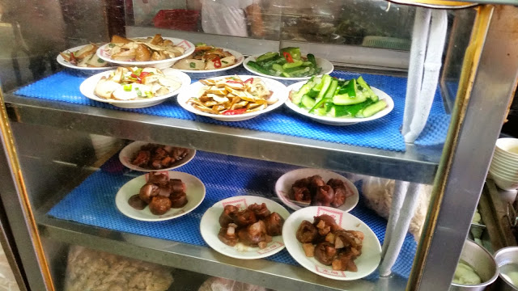

新竹城隍廟．傳統古早味．柳家肉燥飯
新竹城隍廟是新竹地區相當具有人氣與知名度的景點與廟宇 讓人除了來拜拜祈求平安外，聚集在這邊的更有著許多的美食商家 城隍廟這更是人氣鼎沸伴隨著裊裊的香火外更是與許多樸實的小吃一同 使人除了找到心靈的寄託外更加是滿足了口腹的享受
這次剛好遛達之際，也再來造訪了懷念的小吃滷肉飯 時逢平安月與拜拜祈福的月份，更也見到許多的人們和廟宇活動在此展開
位置城隍廟中小吃林立，店家都也熱情的招呼遊客食客們前來品嚐 其中摃丸、米粉、肉圓、蚵仔煎等小吃都是基本的小吃攤位 這次來跟大家分享的是從小到大記憶中、味覺中 所記載的傳統小吃美食，柳家肉燥飯 柳家肉燥飯，從有印象中就是在廟門口旁的第一家攤位十分好找與顯目
從肉燥飯(大家習慣稱呼的滷肉飯)到焢肉飯、雞絲飯、炒米粉等 還有湯品摃丸、香菇肉焿湯、魚丸、燕丸、豬血湯與小菜等都是讓人懷念的好滋味
店家簡單劃分為內用與外帶區，外帶區的部份就以口頭上直接點單即可 而內用區的部份是以托盤方式在取餐的軌道上逐一來點取餐點
熱騰騰的白米飯，老滷的滷肉鍋底搭上香菜的提味 店家就是在此忙碌的盛上一碗又一碗的古早好滋味給前來享用的顧客們
而也同樣有配上一道道的小菜供客人們點取食用
好食的個人，每次來當然就是點上一大碗的肉燥飯加蛋 和個人大愛的香菇肉焿湯，這次更加點上了白菜魯這個傳統的小菜
你看看，黃金通透的肥肉肉層散發著油亮油亮的金黃色澤 搭配上口感上較為黏膩的米飯更帶上了黑胡椒、青綠色的香菜和酸菜的提味 這樣多層次的搭配，讓整體上的肉燥飯給人的感受，就是這麼令人食指大動口水直流
趁熱時來入口的肉燥飯更是充滿口感，熱騰騰的感受口中米飯、滷肉、酸菜、香菜 組合起來讓人有股回到古早味時給他來品嚐到正港傳統的好滋味說 不過印象中以前還有搭配上一小片的酸黃瓜片而這次就沒了看到嚕 而配上的滷蛋，滷到十分的入味，彈韌的蛋白與綿密的蛋黃
配上滷肉飯一同，就是讓人一口接一口給他 享受的扒著肉燥飯舒服的吃下去
白菜魯更是經久厚煮的好滋味，他們家的白菜魯是偏較重口味的湯底口感 跟有些店家是用較清燉風格的白菜魯又有些許的不同，就端看個人喜好
而整體的品嚐起來更是覺得很是好吃，湯底部份偏重 白菜與佐料等的搭配滋味與厚實略油膩的湯頭，對個人來說還蠻不錯的
香菇肉焿湯，個人偏愛的湯品，從小時喝到就一直懷念的湯頭口感 怎麼說呢~應該來說是比較偏厚濃的湯頭，很香很濃在口中的滋味是會凝結而不散的 覺得是久煮的冬瓜、香菇與肉焿配上了湯底的處理，讓整體的湯品
引自:http://mars9977.pixnet.net/blog/post/385767074-%E3%80%90%E6%96%B0%E7%AB%B9%E3%80%91%E5%82%B3%E7%B5%B1%E5%8F%A4%E6%97%A9%E5%91%B3%EF%BC%8E%E6%9F%B3%E5%AE%B6%E8%82%89%E7%87%A5%E9%A3%AF